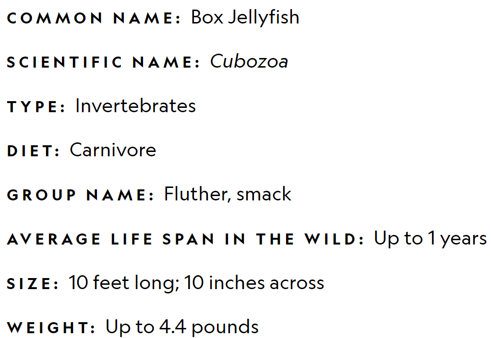
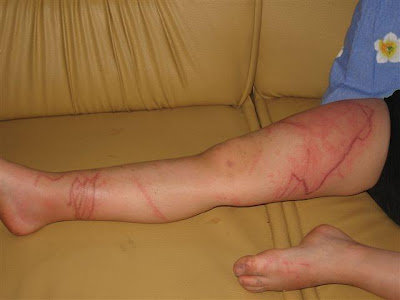

Box jellyfish (class Cubozoa) are cnidarian invertebrates distinguished by their cube-shaped medusae. Some species of box jellyfish produce potent venom: Chironex fleckeri, Carukia barnesi and Malo kingi. Stings from these and a few other species in the class are extremely painful and can be fatal to humans. The infamous box jellyfish developed its frighteningly powerful venom to instantly stun or kill prey, like fish and shrimp, so their struggle to escape wouldn’t damage its delicate tentacles.Their venom is considered to be among the most deadly in the world, containing toxins that attack the heart, nervous system, and skin cells. It is so overpoweringly painful, human victims have been known to go into shock and drown or die of heart failure before even reaching shore. Survivors can experience considerable pain for weeks and often have significant scarring where the tentacles made contact.
Box jellies, also called sea wasps and marine stingers, live primarily in coastal waters off Northern Australia and throughout the Indo-Pacific. They are pale blue and transparent in color and get their name from the cube-like shape of their bell.
Jellyfish are like other cnidarians generally carnivorous (or parasitic), feeding on planktonic organisms, crustaceans, small fish, fish eggs and larvae, and other jellyfish, ingesting food and voiding undigested waste through the mouth. Some of the preferred foods include tiny fishes, arrow worms, annelid worms, mantis shrimps and prawns from the family Sergestidae. They are big on crustaceans in general. Box jellyfish sometimes even munch on fellow jellyfish, albeit of different species. These invertebrates are carnivorous to the core.
The infamous box jellyfish developed its frighteningly powerful venom to instantly stun or kill prey, like fish and shrimp, so their struggle to escape wouldn’t damage its delicate tentacles.Their venom is considered to be among the most deadly in the world, containing toxins that attack the heart, nervous system, and skin cells. It is so overpoweringly painful, human victims have been known to go into shock and drown or die of heart failure before even reaching shore. Survivors can experience considerable pain for weeks and often have significant scarring where the tentacles made contact.
Marks of Box Jellyfish in a Human leg